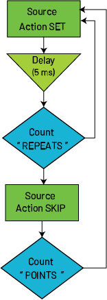

|
|
|
This function defines a trigger model block that sets the source output pulse to the value at the present index in the list of sweep values without advancing the index.
Type |
TSP-Link accessible |
Affected by |
Where saved |
Default value |
Function |
Yes |
|
|
|
Usage
slot[Z].trigger.model.addblock.source.action.pulseset("triggerModelName", "blockName", channel)
slot[Z].trigger.model.addblock.source.action.pulseset("triggerModelName", "blockName", {channelList})
Z |
Module slot number |
|
Name of the trigger model to which this block is added |
|
Name of the trigger block; an empty string is a valid block name |
|
Channel number; see Details |
|
Table of channels to make measurements on; for example:
|
Details
This block sets the source output pulse to the sweep value at the present index of the sweep table without advancing to the next point. This allows you to apply the same value across multiple blocks or delay periods without changing the sweep position.
This block can be used in a trigger model to reapply or hold a source value for a specified time before proceeding. This command does not increment the sweep index, so repeated executions use the same value unless the index is modified using another action block.
The list of sweep values is created by one of the following commands:
slot[Z].smu[X].trigger.source.linearYslot[Z].smu[X].trigger.source.listYslot[Z].smu[X].trigger.source.logYYou can specify one or more channels for the source action to run on using channelList. All source actions run on all specified channels in parallel, plus or minus 500 ns. The trigger model then waits for all measurements to complete before continuing. The channels are specified as either integers or slot notation Z00X, where Z is the slot number and X is the channel number. For example, channel 1 on slot 1 is specified as either 1 or 1001.
All specified channels must be on the module running the trigger model.
Example
-- Configure the sweep. slot[1].smu[1].trigger.source.lineari(0, 1, 10) -- Create the trigger model. slot[1].trigger.model.create("myTM") slot[1].trigger.model.addblock.source.action.pulseset("myTM", "PulseSet", 1) slot[1].trigger.model.addblock.delay.constant("myTM", "", 0.005) slot[1].trigger.model.addblock.branch.counter("myTM", "", "PulseSet", 3) slot[1].trigger.model.addblock.source.action.skip("myTM", "", 1) slot[1].trigger.model.addblock.branch.counter("myTM", "", "PulseSet", 5) -- Turn on the output before the trigger model is initiated. slot[1].smu[1].source.leveli = 0 slot[1].smu[1].source.output = slot[1].smu[1].ON -- Initiate the trigger model. slot[1].trigger.model.initiate("myTM") -- Wait for the trigger model to complete. waitcomplete() -- Turn the output off. slot[1].smu[1].source.output = slot[1].smu[1].OFF |
This example applies each step of a linear current sweep three times before advancing. The |
Trigger model diagram

Also see
slot[Z].smu[X].source.pulse.limitnY
slot[Z].smu[X].source.pulse.limitpY
slot[Z].smu[X].source.pulse.limitY
slot[Z].trigger.model.addblock.source.action.pulsestep()
Sweep configuration commands
slot[Z].smu[X].trigger.source.linearY
slot[Z].smu[X].trigger.source.listY
slot[Z].smu[X].trigger.source.logY